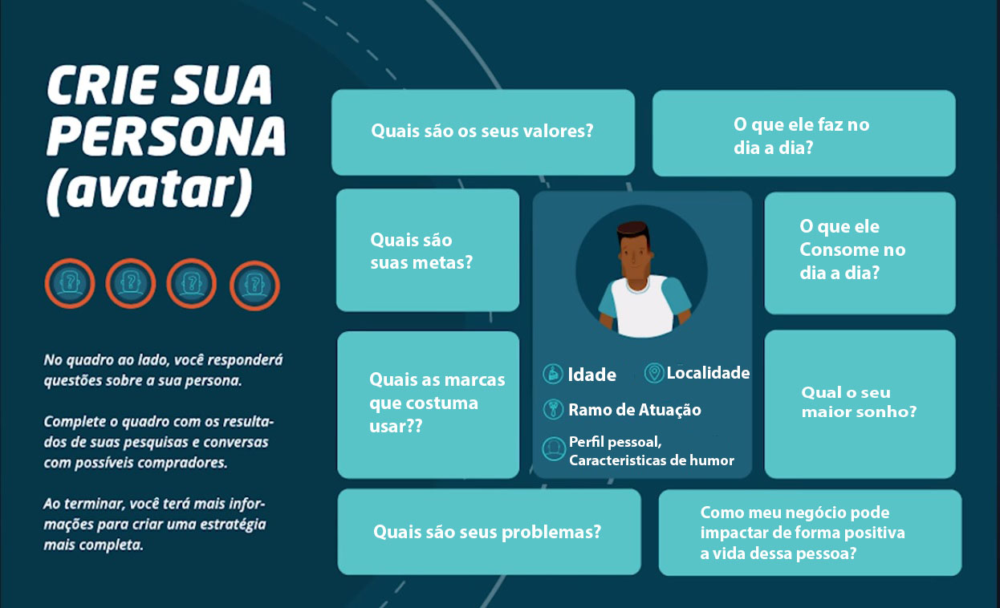

Apreda a criar personas
Personas são personagens criados a partir de pesquisa com pessoas reais. São elas que auxiliam nas decisões do marketing e representam quem é seu comprador real.
Personas são personagens criados a partir de pesquisa com pessoas reais. São elas que auxiliam nas decisões do marketing e representam quem é seu comprador real.
O Publico alvo é composto por um segmento da sociedade que tem caracteriscicas em comum, ele é uma representação amplados clientes que você tem ou pretende ter.
Por exemplo: Um homem, de 25 a 35 anos, classe média, brasileiro, formado em direito e que trabalha em uma empresa de advocacia, mas quer uma recolocação profissional.
A Persona caracteriza seus compradores reais e alem dos dados que estão no seu público-alvo, ela apresenta outros critérios voltados para informações mais pessoais.
Por exemplo: Caio, um homem de 29 anos, classe média, brasileiro, que mora em São João Del Rey, no interior de Minas Gerais.
Ele é formado em direito e trabalha lnuma empresa de advocacia, mas quer uma recolocação profissional.
Gostos pessoais: Gosta muito de cozinhar e tem vontade de se dedicar mais a isso. Por isso nos finais de semana convida os amigos e prepara jantares para todos. por ser de classe média ele não compra produtos caros, mas se tiver com uma qualidade melhor ele não liga de gastar mais.
Personalidade e estilo de vida: ele é divertido e está sempre rodeado de pessoas.
Pensar em estratégias de marketing para alguem que voce tem mais informações, faz com que seu copnteudo seja melhor direcionado, além de ser mais util pras pessoas.
